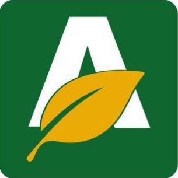

ADA AGRO-BUSINESS est votre fournisseur de confiance en semences certifiées et matériaux agricoles au Sénégal.
Nous accompagnons les agriculteurs, coopératives et exploitations avec des produits de qualité pour améliorer les rendements et moderniser l'agriculture.
Notre mission : vous fournir les meilleurs outils pour une agriculture performante et durable.